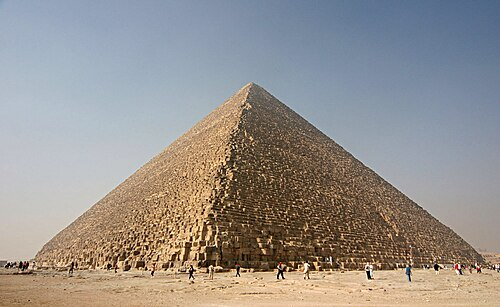
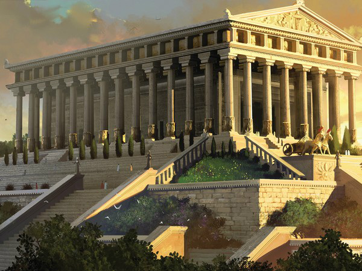
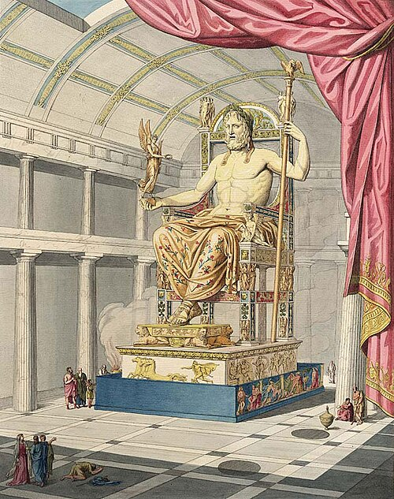

Cele 7 minuni ale lumii
Cele șapte minuni ale lumii antice este o listă ce conține șapte edificii din Antichitate.
Lista era în principal un ghid turistic pentru călătorii din lumea antică ce voiau să vadă cele mai
cunoscute destinații din acea perioadă. Aceste construcții impresionau prin măreția, frumusețea și ingeniozitatea lor arhitecturală.
Deși majoritatea nu s-au păstrat până în prezent, ele continuă să fascineze și să fie studiate ca simboluri ale
realizărilor umane din Antichitate.
Marea Piramidă din Giza
Marea Piramidă din Giza este cea mai veche și singura dintre cele șapte minuni ale lumii antice care s-a păstrat până astăzi.
A fost construită în jurul anului 2560 î.Hr. ca mormânt pentru faraonul Keops și impresionează prin dimensiunile
sale uriașe și precizia construcției. Piramida este un simbol al puterii și cunoștințelor avansate ale civilizației egiptene antice.

Construită în urmă cu peste 4.500 de ani, piramida continuă să uimească prin dimensiunile sale.
Grădinile suspendate ale Semiramidei
Grădinile suspendate ale Semiramidei erau o construcție impresionantă, realizată pe mai multe terase înalte,
pline cu arbori și plante exotice. Ele au fost considerate o minune a lumii antice datorită ingeniozității
sistemului de irigare și frumuseții lor deosebite. Deși existența lor exactă rămâne incertă, grădinile
continuă să fascineze prin legendele care le înconjoară.

Potrivit legendelor, au fost construite pentru a-i aminti reginei Amytis de peisajele verzi ale ținutului ei natal.
Templul zeiței Artemis din Efes
Templul Artemisei din Efes, cunoscut și ca Templul Dianei, a fost un impresionant edificiu antic dedicat zeiței Artemis.
Construit în anul 550 î.Hr., în orașul Efes (astăzi în Turcia), acesta era considerat una dintre cele șapte minuni ale lumii antice.
Din templul original s-au păstrat doar câteva relicve.

Astăzi, din mărețul templu au rămas doar ruine care amintesc de splendoarea sa de odinioară.
Statuia lui Zeus din Olympia
Statuia lui Zeus din Olympia a fost una dintre
cele șapte minuni ale lumii antice, realizată de sculptorul Phidias în jurul anului 435 î.Hr. Avea aproximativ 13 metri înălțime
și era realizată din fildeș și aur, fiind adăpostită într-un templu special construit pentru ea. Se crede că statuia a fost
distrusă într-un incendiu la Constantinopol, în secolul al V-lea.

Statuia îl înfățișa pe Zeus așezat pe tron, impunător și plin de măreție.
Mausoleul din Halicarnas
Mausoleul din Halicarnas a fost un impresionant
mormânt-templu construit pentru satrapul Mausol de arhitecții greci Pytheos și Satyros, cu sculpturi realizate de Scopas și Timotheos.
Construcția, finalizată în 335 î.Hr., se remarca prin înălțimea sa de aproximativ 49 metri și prin designul său unic, combinând elemente
grecești și un plan piramidal cu cvadrigă. Deși distrus în mare parte de un cutremur în secolul al XII-lea, mausoleul a rămas un simbol
al gloriei și măiestriei arhitecturale antice.

Mausoleul îl celebra pe Mausol și soția sa Artemisa printr-un monument grandios, unic în lumea antică.
Colosul din Rodos
Colosul din Rodos a fost o statuie uriașă din bronz,
dedicată zeului Helios, construită pentru a sărbători apărarea insulei în timpul unui asediu. Cu o înălțime de aproximativ 33 metri,
statuia a străjuit portul timp de 56 de ani până când un cutremur i-a distrus un picior. Deși nu mai există astăzi, Colosul
a rămas un simbol al măiestriei și inspirației în sculptură antică.

Colosul îl înfățișa pe Helios strălucind deasupra portului, simbol al protecției și al puterii.
Farul din Alexandria
Farul din Alexandria, construit pe insula Pharos
în secolul al III-lea î.Hr., ghida navele și simboliza portul orașului antic. Construcția avea trei niveluri, flăcări vizibile
de la distanță și o statuie deasupra, fiind considerat una dintre cele șapte minuni ale lumii antice. Deși a fost distrus de
cutremure în secolele XIV și XV, ruinele sale au fost descoperite sub apă în apropierea Alexandriei.

Farul lumina marea și portul, ghidând marinarii și impresionând prin măreția sa.
Concluzie
Cele șapte minuni ale lumii antice reprezintă cele mai remarcabile realizări ale civilizațiilor antice, demonstrând ingeniozitatea,
creativitatea și măiestria oamenilor din acea perioadă. Ele nu erau doar monumente impresionante, ci și simboluri ale puterii,
credințelor și culturii societăților care le-au construit. Studierea lor ne ajută să apreciem moștenirea lumii antice și
să înțelegem evoluția arhitecturii, artei și tehnologiei de-a lungul istoriei.